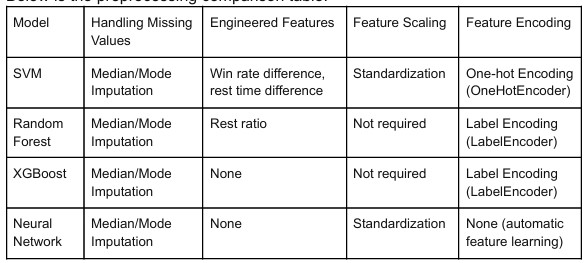

Wireless DRL
Dual-UAV RIS-assisted SWIPT, Voronoi user partitioning, DRL resource allocation, throughput and energy-harvesting tradeoffs.
NCKU CCE · deployable AI systems
I connect wireless DRL research, edge AI deployment, computer vision, and embedded integration. My recent work spans dual-UAV RIS-assisted SWIPT optimization, Jetson Xavier NX demos, ControlNet generation, gait authentication, and award-winning ML competitions.
Positioning
My work sits at the intersection of physical-layer communication, AI optimization, and end-to-end system delivery. I prefer projects where algorithms have to survive real deployment constraints: latency, memory, sensors, cameras, Docker, and hardware I/O.
Dual-UAV RIS-assisted SWIPT, Voronoi user partitioning, DRL resource allocation, throughput and energy-harvesting tradeoffs.
Jetson Xavier NX, ONNX Runtime, TensorRT FP16, FastAPI, Gradio, Docker, camera/audio device integration.
YOLOv8, CLIP, Stable Diffusion/ControlNet, MotionBERT features, segmentation, classification, and VLM feature engineering.
Raspberry Pi, Arduino, STM32, acoustic navigation, PID/bang-bang control, image sensors, and robotic integration.
System Map
The site now treats your portfolio like a system: research produces optimization logic, edge projects prove deployability, and competitions validate model-building instincts.
AIDSP Projects
The AIDSP suite is now a visual focus because it explains your newest engineering story: audio, real-time video, gait authentication, and ControlNet generation on edge-oriented infrastructure.
AIDSP Project 1 · Jetson Xavier NX
FastAPI/Gradio pipeline for 20-second audio capture, log-mel spectrograms, ONNX genre inference, Gemma HTTP lyric generation, and robust fallback behavior.
AIDSP Project 2 · Real-time vision
PyTorch to ONNX to TensorRT FP16 deployment path, USB webcam input, Flask/MJPEG web streaming, and style switching at 15 FPS on Jetson Xavier NX.
AIDSP Project 3 · Privacy-preserving access
YOLOv8-pose 17-keypoint detection, gallery matching, unknown rejection, identity smoothing, and tailgating alerts in a Jetson Docker demo package.
AIDSP Project 4 · Public repo
Gradio-based Stable Diffusion + ControlNet app with Canny/Sketch controls, scheduler, seed, CFG, control weight, optional LoRA, and ablation logging.
Selected Projects

AIDSP · Edge AI
Jetson-targeted demos across audio + LLM, real-time NST, gait authentication, and ControlNet generation.
Master's Thesis
Energy-aware Voronoi user partitioning and DRL resource allocation for time-switching, power, and RIS phase control.

Capstone · Robotics
Integrated hull design, audio navigation, YOLOv8 LED recognition, and MCU/Raspberry Pi control into a sequential autonomous pipeline.

Medical Vision
Attention U-Net with elastic deformation augmentation for LGG MRI segmentation.

Kaggle · NeurIPS 2025
GNN + XGBoost hybrid ensemble with Mordred/RDKit descriptors for polymer property prediction.
GenAI · RAG
Resume-aware interview simulator using LangChain, FAISS, OpenAI API, and structured feedback loops.

Efficient Vision
Input-conditioned kernels and compact transformer design for lightweight visual recognition.

IEEE AVSS TAISC
CLIP semantic features combined with XGBoost for visual accident-risk scoring.
Research
The thesis pipeline separates offline service-region planning from online DRL resource control, letting the model reason about user mobility, UAV energy, SWIPT efficiency, and fairness.
Battery-aware weighted Voronoi partitioning
DRL control for time, power, RIS phase and element switching
Energy-harvesting efficiency, sum throughput, worst-user fairness
Awards
Gold Award / 2nd Place, The First AI for Children Challenge.
Silver Medal, Top 0.66% (15 / 2,240).
Top 9.2% for traffic accident classification.
Top 7.4% among 633 teams.
Skills